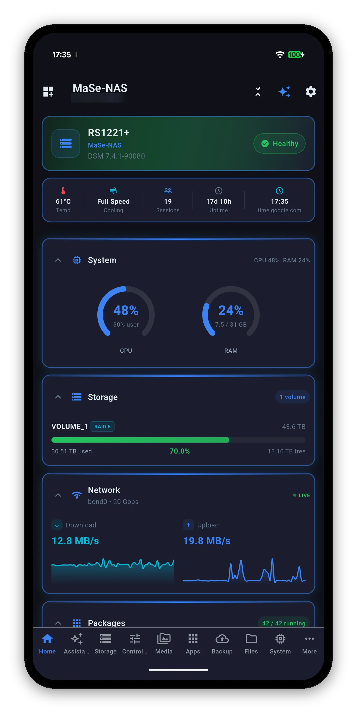

Syno Manager is a native Synology app for Android, iOS, macOS and Windows. Live system, storage and network readings, Docker, cameras, photos, backups and files - the parts of DSM you actually check, in one fast app that adapts to exactly what your NAS runs.

Checking whether a backup ran should not mean signing in to DSM and driving a browser UI built for a mouse. Syno Manager reads the same APIs DSM's own web interface uses and lays the answers out natively - on a phone, a tablet, a Mac or a PC, each one adapting to the screen it is on.
CPU, memory, temperature, disk I/O and per-interface throughput update while you watch, at an interval you choose.
The app asks your NAS what it can do and hides everything it cannot. No dead buttons for packages you do not run.
Your device talks to your NAS. Nothing passes through a MiyaraHub server, because there isn't one.
Tap any area for the full guide - what every screen shows, what every control does, and what it will not do.
A health header, a quick-stats row and a grid of cards you can reorder, collapse or switch off. It remembers how you left it.
CPU and RAM gauges, load average, disk I/O, temperature history, fan speed mode, the DSM update check and power controls.
Volumes and pools with RAID type and free space, per-drive SMART status and temperature, a Quick SMART Test, and safe eject for external drives.
Live throughput per interface, active connections, DSM services, VPN profiles, and DDNS with your public address.
Browse the catalogue and install, update or uninstall. Start, stop and restart containers, read their logs, run whole Compose stacks.
Your whole photo library with real previews, Drive and team folders, and Surveillance Station live view - all of it over QuickConnect too.
Hyper Backup tasks with the space they actually take on the destination, and Active Backup devices with a deduplicated total per workload.
Ask about your NAS in plain words. The model runs on your phone, works with the network off, and only ever reads.
Add a link, a magnet or a .torrent from your phone, watch progress, and change the settings the NAS actually reported.
Browse File Station, manage shared folders, and read Note Station, Office and Contacts.
Wake the NAS, or any other machine on your network through the NAS - which works from anywhere, the way DS Router does it.
Six accent colours or any one you pick, AMOLED true black, text size, which cards appear and which tabs are in the bottom bar. See all six accents.
Every shot on this site is the current app running against a real Synology, not a mock-up. Tap any of them to see it full size.
Syno Manager is a client for your NAS, not a service. Your phone opens a connection to your DiskStation and that is the whole architecture.
Every Synology running DSM 7 is supported, from a two-bay DiskStation to a rackmount with an expansion unit. The app discovers what your NAS offers rather than assuming a model.
Check your model Getting started
It is priced per platform, so Google Play and the Microsoft Store are separate purchases. Apple is a single universal purchase covering iPhone, iPad and Mac - buy it once and it is on all three.
A one-time $6.99 purchase.* No ads, no subscriptions, no in-app purchases. Add your NAS and you are looking at it in under a minute.
* One-time purchase per platform. Apple is a single universal purchase covering iPhone, iPad and Mac.